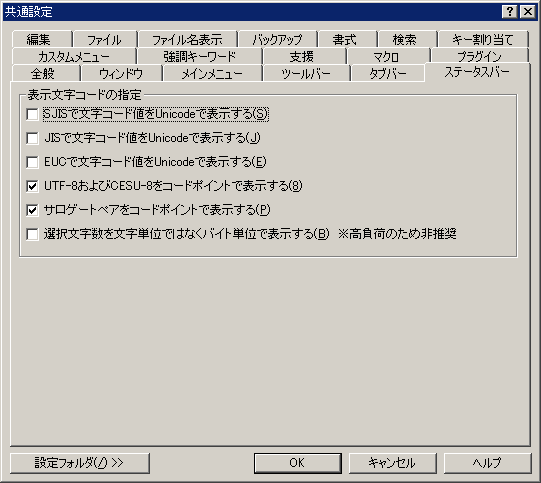

共通設定 『ステータスバー』プロパティ
『全般』
『ウィンドウ』
『メインメニュー』
『ツールバー』
『タブバー』
『ステータスバー』
『編集』
『ファイル』
『ファイル名表示』
『バックアップ』
『書式』
『検索』
『キー割り当て』
『カスタムメニュー』
『強調キーワード』
『支援』
『マクロ』
『プラグイン』

<表示文字コードの指定>
□SJIS,Latin1等で文字コード値をUnicodeで表示する
□JISで文字コード値をUnicodeで表示する
□EUCで文字コード値をUnicodeで表示する
表示文字コードがUnicode以外のときにステータスバーに表示する文字コード値を指定できます。
オンのときはUnicodeの文字コード値を表示します。
オフのときは、表示文字コードにしたがってコード値を表示します。
□UTF-8およびCESU-8をコードポイントで表示する
オンのときは、Unicodeの文字コード値を表示します。
オフのときは、UTF-8またはCESU-8でのコード値を表示します。
□サロゲートペアをコードポイントで表示する
「UTF-8およびCESU-8をコードポイントで表示する」がオンのときに有効です。
オンのときは、サロゲートペアをUnicodeの一文字として文字コード値を表示します。
オフのときは、Unicodeの二文字として文字コード値を表示します。
□選択文字数を文字単位ではなくバイト単位で表示する
オンのときは、選択文字数を表示文字コードでのバイト数で表示します。
オフのときは、Unicodeでの文字数を表示します。
※オンにした場合、選択範囲が変わるたびにバイト数の再計算を行うため、データ量によっては高負荷となる可能性があります
[設定フォルダ]
設定フォルダボタンは、ユーザー別設定を行っている場合のみ表示されます。